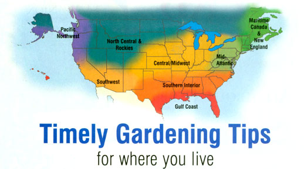

New England & Maritime Canada
When February starts to feel interminable, get outside and do some skiing, skating or walking. Put on a pair of snowshoes and pack down the snow around all your fruit trees. The packed snow is difficult for rodents to burrow through and may help reduce chewing damage to tree trunks. Then, warm up back indoors. Sit in the sun with a cup of hot tea or soup, some homemade dried cantaloupe slices and a stack of seed catalogs. Soon, March will bring noticeably longer days, with the sweet smell of spring hanging in the evening air, and you'll be back in the garden again. By then, overwintered and newly seeded greens will be sprouting; try sowing some cilantro, spinach, mustard and mache this year. The first genuine mud appears, too, so don't get out your garden fork yet. Instead, a sunny day makes cleaning out the greenhouse a welcome task.
In late March when you're out and about, don't forget to listen for the "Peent" call of the male woodcock as he whirls skyward, claiming territory and calling a mate.
Mid-Atlantic
"F" is for February and "f' is for flats. Early in the month, pull out the flats and start eggplant, parsley, celeriac, habanero peppers and the last of the dry bulb onions. In mid-February, seed other peppers, broccoli, cauliflower, cabbage, celery, Chinese greens and lettuce. By the end of the month, start the fast tomato seedlings. Try 'Zarnitsa,' a cold-tolerant Russian variety, for an extra-early harvest, 'Mule Team' for heavy main-season production of top-notch fruits and 'Strawberry Red' (sometimes called 'German Red Strawberry') for an exceptional slicing tomato. In early March, transplant raspberries and blackberries, and shortly after St. Patrick's Day (March 17), plant potatoes. 'Red Cloud,' 'Carols' and 'Rose Apple Finn' are regional favorites with high yields and disease resistance.
Also in mid-March, start transplanting cold-hardy greens (but keep them under row covers), and begin biweekly sowings of beets, carrots and radishes. Spring has arrived!
Southern Interior
Time to start tomato, pepper and eggplant seeds indoors. When the seedlings get their first true leaves, move them to 3-inch pots to grow on until after the frostfree date for your area. Then, transplant them outside.
Plant cool-weather starts like broccoli and cabbage outdoors, and sow English peas, snow peas and sweet snap peas now, before the weather warms up. Try 'Maestro,' a great, high-yielding English pea variety. Also, the nearly leafless 'Sugar Lace II' sweet snap pea and 'Snow Wind' snow pea devote their efforts to producing delicious peas and don't waste energy on extra leaves. Along with edible peas, plant some ornamental sweet peas for their wonderful fragrances and charming flowers; 'Matucana' is a beautiful heirloom variety.
And don't forget the perennials! It's a good time to clean up any lingering dead foliage from last year. Also, many fall-flowering shrubs and trees can be pruned safely through March.
Gulf Coast
If you haven't already worked compost into the garden, now's the time. Remember, the gardener with the most compost wins! Use transplants in February for a quick crop of lettuce and broccoli before the weather heats up and the plants bolt. Brave souls transplant their tomatoes as early as mid-February. These early plants may not last as long into the season, but July usually ends it for tomatoes in our region anyway. Don't forget cherry tomatoes, either. 'Sweet 100' and the old-time 'Porter,' now an heirloom, are hard to beat; these small-fruited varieties can take the summer heat and continue to produce.
Cool temperatures can stunt peppers and eggplants, so hold off on planting these until mid-March, when it's OK to put out all the warm-season crops. Spray fruit trees with horticultural oil just before bud-break; this is when overwintering insects are at their weakest and, therefore, most susceptible to this low-toxicity pesticide.
Central/Midwest
Even though the weather looks like winter, this is the time to work on your summer garden. Start seeds of vegetables like onion, leek, pepper, eggplant and tomato now. To keep them from stretching as they grow, maintain a strong light source at 4 inches above the plants (see "Use the Right Light for Seed-starting Success," Page 108). Fertilize seedlings after six weeks, and transplant them to bigger pots as needed.
For the flower garden, start perennial seeds now, too. Many varieties grown from seed will bloom the first year, making them attractive additions to your garden bed. Annuals to start right away include geraniums, begonias, snapdragons, petunias and impatiens. Hold off on celosias or you will not have optimum garden performance from the plant. Your best results for starting plants from seed will be obtained by using a good-quality seeding mix, having adequate light and following the growing instructions for each variety. Have fun!
North Central & Rockies
Most plants are very sensitive to day length. When day length increases, they immediately begin to add new growth. We are reminded of this every year when we see intense new growth on our indoor tomatoes and herbs beginning after the winter solstice (Dec. 22 in 2003; Dec. 21 in 2004).
Tomatoes, peppers and herbs for the next growing season can catch this wave of momentum; large growing containers will keep them from becoming root-bound before outdoor temperatures warm.
Meanwhile, gather your arsenal of season-extenders to melt the snow and warm the soil: Fabric row covers and cold frames can transform the March garden from lion to lamb, boosting the growth of young transplants and seeds. The real payoff is a late-spring harvest that occurs while other gardeners are just getting started.
Pacific Northwest
The dormant season for Pacific Northwest gardeners officially is past, and plenty of tasks await to help you get back into the swing of gardening. Vegetables such as cole crops, eggplants, onions, peppers and tomatoes really need to be started indoors in order to mature in a timely fashion. Due to our lack of sunlight in the early spring, seed starting on the windowsill usually results in leggy plants, so artificial lighting is preferred (see "Use the Right Light for Seed-starting Success," Page 108). If you are new to starting seeds under lights, don't be skeptical; it's not difficult or expensive.
Outdoors, sow cold-hardy crops like lettuce, spinach, other leafy greens and peas. If it takes a while for the seeds to germinate, have patience, as these seeds usually will survive in the soil until it warms to the proper temperature. If you're impatient, try spreading clear plastic over the garden beds for a few weeks prior to planting; the plastic will speed up the natural seasonal warming of the soil.
Southwest
These last months of winter offer a pause to prepare for spring. Even in areas that still freeze at night and threaten another snowstorm, reprieves of sunny days come more frequently, and we can start to clean up the garden space. Finish pulling out and composting any leftover crops from last season and cut back perennial plants to a few inches to encourage new growth.
Order bulbs and seeds (remember to include seeds for cover crops). Stock up on compost, potting soil and fertilizers, or find and haul these materials from local sources to create your own. Be sure you're not bringing home any materials contaminated with pesticides. In the mountains, cover crops still are growing slowly, but in warmer areas, they should be mowed and turned under before they reach knee high or turn brown. By March, greenhouse planting is in full swing. If you're hungry for spring salads, plant outside and use cloches or fabric row covers to protect and warm your seedlings where night freezes still threaten.
Our thanks to the following for their contributions to the Almanac:
Roberta Bailey, FEDCO Seeds , Waterville, Maine;
Cricket Rakita, Southern Exposure Seed Exchange , Mineral, Virginia;
Lori Hardee and Karen Park Jennings, Park Seed Company , Greenwood, South Carolina;
William D. Adams , Burton, Texas;
Connie Dam-Byl, William Dam Seeds , Dundas, Ontario;
Bill McDorman, Seeds Trust, High Altitude Gardens , Hailey, Idaho;
Rose Marie Nichols McGee, Nichols Garden Nursery , Albany, Oregon;
Josh Kirschenbaum, Territorial Seed Company , Cottage Grove, Oregon; and
Micaela Colley, Seeds of Change , Santa Fe, New Mexico.
Mother Earth News
|
 |
|
|